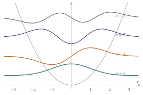

For \(n = 0, 1, 2, \ldots\), the functions \(y_n\) satisfy the differential equation \[\frac{\mathrm{d}^2y_n}{\mathrm{d}x^2} - \omega^2x^2y_n = -(2n + 1)\omega y_n,\] where \(\omega\) is a positive constant, and \(y_n \to 0\) and \(\mathrm{d}y_n/\mathrm{d}x \to 0\) as \(x \to +\infty\) and as \(x \to -\infty\). Verify that these conditions are satisfied, for \(n = 0\) and \(n = 1\), by \[y_0(x) = \mathrm{e}^{-\lambda x^2} \qquad\text{and}\qquad y_1(x) = x\mathrm{e}^{-\lambda x^2}\] for some constant \(\lambda\), to be determined.
Show that \[\frac{\mathrm{d}}{\mathrm{d}x}\left(y_m\frac{\mathrm{d}y_n}{\mathrm{d}x} - y_n\frac{\mathrm{d}y_m}{\mathrm{d}x}\right) = 2(m - n)\omega y_my_n,\] and deduce that, if \(m \neq n\), \[\int_{-\infty}^{\infty} y_m(x)y_n(x)\,\mathrm{d}x = 0.\]
The hook
A mass on a spring oscillates with any energy you like: pull it back a little or a lot. But in 1900 Max Planck found that he could only explain the colours of light emitted by hot objects if the vibrating atoms could have only certain energies, in steps of a fixed size. Energy, at the atomic scale, comes in quanta. Twenty-five years later, quantum mechanics explained why.
This question contains the explanation. The differential equation is, after a change of units, the Schrödinger equation for a quantum particle in a spring-like potential: the quantum harmonic oscillator. It has well-behaved solutions, ones that die away at infinity, only for special values of the energy, labelled by \(n = 0, 1, 2, \ldots\), in equally spaced steps. And the solutions for different \(n\) are orthogonal: the integral of their product is zero, just like \(\sin mx\) and \(\sin nx\) in a Fourier series. The quantum oscillator is the starting point for the physics of molecules, solids and light.
Before you start
Why should a function like \(e^{-\lambda x^2}\) be a sensible guess? What happens to \(e^{-\lambda x^2}\) and its derivative as \(x \to \pm\infty\)?
For large \(|x|\) the equation is dominated by \(y'' \approx \omega^2x^2y\), and a Gaussian \(e^{-\lambda x^2}\) has \(y'' \approx 4\lambda^2x^2y\) for large \(x\), which matches if \(4\lambda^2 = \omega^2\). With \(\lambda > 0\), a Gaussian and all its derivatives decay to \(0\) faster than any power of \(x\). So the boundary conditions will be automatic; the work is in matching the equation.
Working it through
Stage 1 The ground state
Differentiate \(y_0 = e^{-\lambda x^2}\) twice, substitute into the equation with \(n = 0\), and compare coefficients of \(x^2\) and of the constant term.
\(y_0' = -2\lambda xe^{-\lambda x^2}\) and \(y_0'' = (4\lambda^2x^2 - 2\lambda)e^{-\lambda x^2}\). The equation with \(n = 0\) requires \[4\lambda^2x^2 - 2\lambda - \omega^2x^2 = -\omega\] for all \(x\). Matching coefficients: \(4\lambda^2 = \omega^2\) and \(2\lambda = \omega\). Both hold with \(\lambda = \frac\omega2\) (taking \(\lambda > 0\), so that \(y_0 \to 0\)). And \(y_0\), \(y_0' \to 0\) as \(x \to \pm\infty\).■
Stage 2 The first excited state
\(y_1 = xe^{-\lambda x^2}\) has \(y_1' = (1 - 2\lambda x^2)e^{-\lambda x^2}\) and \(y_1'' = (4\lambda^2x^3 - 6\lambda x)e^{-\lambda x^2}\). The equation with \(n = 1\) requires \[4\lambda^2x^3 - 6\lambda x - \omega^2x^3 = -3\omega x,\] which holds with the same \(\lambda = \frac\omega2\). Again \(y_1\) and \(y_1'\) decay at \(\pm\infty\).■
Stage 3 An identity
Differentiate \(y_my_n' - y_ny_m'\) by the product rule. Two of the four terms cancel. Then use the differential equation to replace \(y_n''\) and \(y_m''\).
\(\dfrac{\mathrm{d}}{\mathrm{d}x}(y_my_n' - y_ny_m') = y_m'y_n' + y_my_n'' - y_n'y_m' - y_ny_m'' = y_my_n'' - y_ny_m''\). From the equation, \(y_n'' = \bigl(\omega^2x^2 - (2n + 1)\omega\bigr)y_n\), and similarly for \(m\). So \[y_my_n'' - y_ny_m'' = y_my_n\bigl[\omega^2x^2 - (2n + 1)\omega - \omega^2x^2 + (2m + 1)\omega\bigr] = 2(m - n)\omega y_my_n. \qed\]
Stage 4 Orthogonality
Integrate the identity from \(-\infty\) to \(\infty\). What is the left-hand side?
The left-hand side integrates to \(\bigl[y_my_n' - y_ny_m'\bigr]_{-\infty}^{\infty} = 0 - 0 = 0\), because each \(y\) and \(y'\) tends to \(0\) at both ends. So \(2(m - n)\omega\int_{-\infty}^{\infty}y_my_n\,\mathrm{d}x = 0\), and since \(m \neq n\) and \(\omega > 0\), \[\int_{-\infty}^{\infty}y_m(x)y_n(x)\,\mathrm{d}x = 0. \qed\] For \(y_0\) and \(y_1\) this is easy to see directly: \(y_0y_1 = xe^{-\omega x^2}\) is an odd function. But the identity proves it for every pair, without knowing the functions.
Looking back
Match coefficients. Substituting a guessed form and requiring the equation to hold for all \(x\) determined \(\lambda\).
The Wronskian trick. The combination \(y_my_n' - y_ny_m'\) has a derivative in which the second derivatives can be replaced using the equation, leaving something simple.
Boundary conditions kill boundary terms. Decay at infinity made the integrated left-hand side vanish, which gave orthogonality.
What’s really going on
In 1926 Erwin Schrödinger proposed that a quantum particle is described by a wave function \(\psi(x)\), which for a particle of energy \(E\) in a potential \(V(x)\) satisfies \[-\frac{\hbar^2}{2m}\psi'' + V(x)\psi = E\psi.\] For a spring, \(V(x) = \frac12m\Omega^2x^2\), and after rescaling \(x\) this is exactly the equation in the question, with \(E = \bigl(n + \frac12\bigr)\hbar\Omega\). The physical requirement that \(\psi\) dies away at infinity (so that the particle is somewhere) can only be met for these energies: that is quantisation, falling out of the mathematics. Notice that the lowest energy is not zero but \(\frac12\hbar\Omega\): a quantum oscillator can never be completely at rest. This zero-point energy is real and measurable; it is why liquid helium does not freeze at ordinary pressure, even at absolute zero.

Hermite functions and Sturm–Liouville theory
The general solution is \(y_n = H_n(\sqrt\omega x)e^{-\omega x^2/2}\), where \(H_n\) is a polynomial of degree \(n\), the Hermite polynomial (Figure 8.6.1). Orthogonality is not special to this equation. Whenever an equation can be written as \((py')' + qy = -\lambda wy\) with suitable boundary conditions, solutions belonging to different values of \(\lambda\) are orthogonal, by exactly the argument of Stage 4. This is Sturm–Liouville theory (1830s), and it covers the sine functions of Fourier series (Section 3.7), the vibrations of a drum, the Legendre polynomials of electrostatics and the wave functions of the hydrogen atom. The eigenvalue problem of Section 4.7 is another instance: the critical values found there are the eigenvalues \(\lambda\), and the orthogonal functions are the natural “modes” of the system.
The thinking skill
To show two solutions of related equations are orthogonal, find an exact derivative whose integral vanishes by the boundary conditions, and which equals a multiple of their product.
This is far more powerful than computing the integral directly: it works for every pair at once, even when you cannot write the solutions down.
Try this next
The next state. Show that \(y_2 = (4\lambda x^2 - 1)e^{-\lambda x^2}\), with \(\lambda = \frac\omega2\), satisfies the equation with \(n = 2\). Check directly that \(\int_{-\infty}^\infty y_0y_2\,\mathrm{d}x = 0\), using \(\int_{-\infty}^\infty e^{-\omega x^2}\,\mathrm{d}x = \sqrt{\pi/\omega}\) and \(\int_{-\infty}^\infty x^2e^{-\omega x^2}\,\mathrm{d}x = \frac{1}{2\omega}\sqrt{\pi/\omega}\).
No other energies. Try \(y = e^{-\lambda x^2}\) with \(n\) replaced by a general number \(\nu\). Show that it works only if \(\nu = 0\). (In fact, decaying solutions exist only when \(\nu\) is a non-negative integer.)
Sine waves. Use the same method to show that \(\int_0^\pi \sin mx\sin nx\,\mathrm{d}x = 0\) for \(m \neq n\), starting from \(y'' = -n^2y\) with \(y(0) = y(\pi) = 0\).
A ladder. Show that if \(y_n\) solves the equation, then \(y_{n+1} = \omega xy_n - y_n'\) solves it with \(n + 1\) in place of \(n\). Use this to generate \(y_1\) and \(y_2\) from \(y_0\). (This is the “raising operator” of quantum mechanics.)
Further reading
David Griffiths, Introduction to Quantum Mechanics (Cambridge University Press). The standard undergraduate physics text; Chapter 2 treats the harmonic oscillator.
Richard Feynman, QED: The Strange Theory of Light and Matter (Princeton University Press). A popular account of quantum mechanics by one of its masters.
Mary Boas, Mathematical Methods in the Physical Sciences (Wiley). Covers Hermite polynomials and Sturm–Liouville theory for students of mathematics and physics.